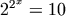
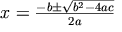
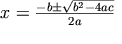

Descrizione sommaria: Linguaggio di
marcatura matematica (MathML) Versione 2.0
Successivo: 2 Fondamenti del MathML
1 Introduzione
1.1 La matematica e la sua
notazione
1.2 Origini ed obiettivi
1.2.1 La storia del
MathML
1.2.2 Ringraziamenti
1.2.3 Limitazioni
dell'HTML
1.2.4 Requisiti
della marcatura per la matematica
1.2.5 Obiettivi di progettazione del
MathML
1.3 Il ruolo del MathML sul
web
1.3.1 Progettazione a strati dei servizi web
matematici
1.3.2 Relazione
con altra tecnologia web
Una caratteristica distintiva della matematica è l'uso di un sistema di notazioni simboliche bidimensionali complesso e altamente evoluto. Come ha scritto J.R. Pierce nel suo libro sulla teoria della comunicazione, la matematica e le sue notazioni non devono essere viste come una cosa unica [Pierce1961]. Le idee matematiche esistono indipendentemente dalle notazioni che le rappresentano. Comunque, la relazione tra il significato e la notazione è sottile, e parte del potere che ha la matematica di descrivere e analizzare deriva dalla sua capacità di rappresentare e manipolare le idee in forma simbolica. La sfida nel mettere la matematica sul Web sta nel catturare sia la notazione che il contenuto (ovvero il significato) in modo che i documenti possano utilizzare le forme notazionali altamente evolute della matematica scritta e stampata, e il potenziale per l'interconnettività nei mezzi elettronici.
Le notazioni matematiche sono in continua evoluzione mentre la gente continua a fare innovazioni nei modi di raggiungere ed esprimere le idee. Anche le notazioni comuni dell'aritmetica sono passate attraverso una sorprendente varietà di stili, compresi molti oggi non più in uso ma sostenuti da figure matematiche dominanti della loro epoca [Cajori1928]. La notazione matematica moderna è il prodotto di secoli di raffinamento, e le convenzioni notazionali per l'impaginazione di alta qualità sono piuttosto complesse. Per esempio, le variabili, o lettere che stanno per numeri, oggi sono stampate di solito in un corsivo speciale leggermente distinto dal normale corsivo dei testi. La spaziatura intorno ai simboli per le operazioni come +, -, × e / è leggermente diversa da quella del testo, per riflettere le convenzioni sulla precedenza degli operatori. Alle convenzioni dell'impaginazione matematica sono stati dedicati libri interi, dall'allineamento degli apici e dei pedici alle regole per scegliere le dimensioni delle parentesi, a pratiche notazionali specifiche di vari sottocampi della matematica (per esempio, [Chaundy1954], [Swanson1979], [Swanson1999], [Higham1993], o nella letteratura TEX [Knuth1986] e [Spivak1986]).
Le convenzioni notazionali nella matematica, e nel testo stampato in generale, guidano l'occhio e rendono le espressioni stampate molto più facili da leggere e da comprendere. Sebbene siano date di solito per scontate, contiamo su centinaia di convenzioni come i paragrafi, le maiuscole e le famiglie di font, e anche il concetto della numerazione decimale delle sezioni come facciamo in questo documento (un'invenzione dovuta a G. Peano, che è probabilmente più conosciuto per i suoi assiomi sui numeri naturali). Tali convenzioni notazionali sono forse più importanti per i mezzi elettronici, dove si deve tenere conto delle difficoltà della lettura su uno schermo.
Comunque, mettere la matematica sul web è più che trovare semplicemente modi di visualizzare la notazione matematica tradizionale in un browser web. Il web rappresenta un cambiamento fondamentale nella metafora sottostante per la memorizzazione della conoscenza, un cambiamento nel quale l'interconnettività assume un ruolo centrale. Sta diventando sempre più importante trovare modi di comunicare la matematica che facilitino l'elaborazione, la ricerca e l'indicizzazione automatica, e il riutilizzo in altre applicazioni matematiche e in altri contesti. Con questo avanzamento nella tecnologia della comunicazione, c'è l'opportunità di espandere la nostra capacità di rappresentare, codificare, e infine di comunicare le nostre intuizioni matematiche e comprenderrci l'un l'altro. Noi crediamo che il MathML sia una passo importante nello sviluppo della matematica sul web.
Il problema di codificare la matematica per l'elaborazione dei computer o per la comunicazione elettronica è molto più vecchio del web. La pratica comune tra gli scienziati prima del web era scrivere documenti in qualche forma codificata basata sull'insieme di caratteri ASCII, e spedirsela per e-mail l'un l'altro. Vari metodi di marcatura per la matematica, in particolare il TEX [Knuth1986], erano già ampiamente in uso nel 1992 prima che il web crescesse di importanza, [Poppelier1992].
Fin dall'inizio, il web si è rivelato un metodo molto efficace per rendere disponibili le informazioni a gruppi di individui a grande distanza. Comunque, anche se il web è stato concepito ed implementato inizialmente dagli scienziati per gli scienziati, le possibilità di includere espressioni matematiche nell'HTML sono sempre state molto limitate. Attualmente, la maggior parte della matematica sul web consiste in testo con immagini di notazione scientifica (in formato GIF o JPEG), che sono difficili da leggere e da modificare, o in interi documenti in formato PDF.
Il Consorzio del Web (W3C) si rendeva conto che questa mancanza di supporto per la comunicazione scientifica era un serio problema. Dave Raggett incluse una proposta per la matematica in HTML nella bozza di lavoro dell'HTML 3.0 nel 1994. Nell'aprile 1995 alla conferenza del WWW di Darmstadt è stata tenuta una discussione pubblica sulla marcatura matematica. Nel novembre 1995, dei rappresentanti della Wolfram Research presentarono una proposta per la matematica nell'HTML al gruppo W3C. Nel maggio 1996, l'incontro dell'Iniziativa per la Biblioteca Digitale a Champaign-Urbana assunse un ruolo importante nel riunire molte parti interessate. In seguito all'incontro si formò un Comitato di Revisione Editoriale per la Matematica nell'HTML. Negli anni successivi, questo gruppo è cresciuto, ed è stato formalmente ricostituito come il gruppo di lavoro per la Matematica del W3C nel marzo 1997.
La proposta del MathML riflette gli interessi e l'esperienza di un gruppo molto vario. Molti contributi allo sviluppo del MathML meritano un riconoscimento speciale, e alcuni di essi saranno discussi qui. Uno di questi contributi riguarda la questione dell'accessibilità, specialmente per gli svantaggiati visivamente. Sotto questo aspetto è particolarmente notevole T.V. Raman. Neil Soiffer e Bruce Smith della Wolfram Research hanno condiviso la loro esperienza con il problema di rappresentare la matematica in connessione con il progetto di Mathematica 3.0; questo ha avuto un'influenza importante nel progetto degli elementi di presentazione. Anche Paul Topping della Design Science ha contribuito con la sua esperienza nella formattazione e scrittura di testi matematici. Il MathML ha beneficiato della partecipazione di vari membri del gruppo di lavoro coinvolti in altri sforzi di codifica matematica nelle comunità SGML e della computer algebra, compresi Stephen Buswell della Stilo Technologies, Nico Poppelier (allora con la Elsevier Science), Stéphane Dalmas dell'INRIA (Sophia Antipolis), Stan Devitt dapprima con la Waterloo Maple, Angel Diaz e Robert S. Sutor dell'IBM e Stephen M. Watt dell'Università dell'Ontario Occidentale. In particolare, il MathML è stato influenzato dal progetto OpenMath, dal lavoro del gruppo di lavoro ISO 12083 e dal lavoro della Stilo Technologies su un frammento `semantico' di DTD per la matematica. La Società Matematica Americana ha assunto un ruolo chiave nello sviluppo del MathML. Tra le altre cose, ha fornito due presidenti del gruppo di lavoro: Ron Whitney ha guidato il gruppo da maggio 1996 a marzo 1997, e Patrick Ion, che è stato co-presidente del gruppo con Robert Miner del Centro di Geometria, da marzo 1997 ad oggi.
Il gruppo di lavoro ha beneficiato dell'aiuto di molta altra gente nello sviluppo delle specifiche del MathML 1.0. Vorremmo nominare in particolare Barbara Beeton, Chris Hamlin, John Jenkins, Ira Polans, Arthur Smith, Robby Villegas e Joe Yurvati per l'aiuto e per le informazioni nella compilazione delle tabelle di caratteri nel Capitolo 6 [Caratteri, entità e font], come pure Peter Flynn, Russel S.S. O'Connor, Andreas Strotmann e altri che hanno contribuito alla mailing list www-math per la loro attenta lettura e le loro critiche costruttive.
Come il Gruppo di Lavoro per la Matematica passò al MathML 2.0 di nuovo fu aiutato da molti della famiglia dei Gruppi di Lavoro del W3C con i quali abbiamo avuto necessariamente molta interazione. Al di fuori del W3C, un fronte rilevante particolarmente attivo fu l'interfaccia con il Comitato Tecnico Unicode (UTC) e il WG2 NTSC che trattava l'ISO 10646. Allora il progetto STIX mise insieme una proposta per l'aggiunta dei caratteri per la notazione matematica all'Unicode, e questo lavoro fu di nuovo capeggiato da Barbara Beeton dell'AMS. L'intero problema fu diviso in tre proposte, due delle quali avanzate da Murray Sargent della Microsoft, membro del GL per la Matematica e dell'UTC. Ma la comunità matematica deve essere grata per l'aiuto essenziale e per la guida per un paio di anni di raffinamento delle proposte per aiutare la matematica fornita da Kenneth Whistler della Oracle, membro dell'UTC e del WG2. Anche Asmus Freitag, a sua volta coinvolto nelle delibere dell'UTC e del WG2, è stato un acceso sostenitore delle necessità della notazione scientifica.
La richiesta di mezzi efficaci per la comunicazione scientifica elettronica rimane alta. Sempre più i ricercatori, gli scienziati, gli ingegneri, gli istruttori, gli studenti e i tecnici si trovano a lavorare in luoghi diversi e a contare sulla comunicazione elettronica. Allo stesso tempo, i metodi basati sulle immagini che sono attualmente i mezzi predominanti per trasmettere la notazione scientifica sul web sono primitivi e inadeguati. La qualità dei documenti è bassa, la creazione è difficile e l'informazione matematica contenuta nelle immagini non è disponibile per la ricerca, l'indicizzazione o il riutilizzo in altre applicazioni.
I problemi più ovvi con l'HTML per la comunicazione matematica sono di due tipi.
Problemi di visualizzazione. Si consideri l'equazione . Questa equazione è della dimensione giusta per corrispondere alla linea circostante di un carattere a 14 punti nel sistema dove è stata creata. Ovviamente, su altri sistemi, o per altre dimensioni del font, l'equazione è troppo piccola o troppo grande. Un secondo punto da osservare è che l'immagine dell'equazione è stata generata con uno sfondo bianco. Perciò, se un lettore o un browser reimposta lo sfondo della pagina ad un altro colore, l'anti-aliasing dell'immagine dà come risultato `aloni' bianchi. Successivamente, si consideri l'equazione  che è un esempio con l'asse di allineamento orizzontale dell'equazione sopra i margini superiori delle lettere minuscole nel testo circostante.
Questa equazione ha un'estensione verso il basso che pone la linea di base dell'equazione ad un punto a circa un terzo dal margine inferiore dell'immagine. Si può allineare l'immagine così: , in modo che la linea centrale dell'immagine e la linea di base dell'equazione coincidano, ma questo causa problemi con le interlinee, rendendo l'equazione difficile da leggere. Inoltre, l'allineamento centrato delle immagini è gestito in modi leggermente diversi dai vari browser, rendendo impossibile garantire l'allineamento corretto per i diversi client.
Le equazioni basate sulle immagini sono generalmente più difficili da vedere, da leggere e da comprendere del testo circostante nella finestra del browser. In più, questi problemi peggiorano quando il documento viene stampato. La risoluzione delle equazioni come immagini sarà di circa 70 punti per pollice, mentre il testo circostante sarà tipicamente di 300, 600 o più punti per pollice. La differenza di qualità è giudicata inaccettabile dalla maggior parte delle persone.
Problemi di codifica. Si consideri la ricerca in questo
documento di parte di un'equazione, per esempio, la parte `=10' della
prima equazione in precedenza. In uno stato d'animo simile, si
consideri di voler copiare un'equazione per incollarla in un'altra
applicazione; ancora più difficile è copiare e incollare
una sottoespressione. Usando metodi basati sull'immagine, nessuna di
queste necessità comuni può essere soddisfatta
adeguatamente. Sebbene l'uso dell'attributo alt nel
codice sorgente del documento possa aiutare, è chiaro che
documenti web altamente interattivi devono fornire un'interfaccia
più sofisticata tra i browser e la notazione matematica. Un
altro problema nel codificare la matematica con immagini è che
richiede una banda più ampia. La marcatura che descrive
un'equazione è tipicamente più piccola e più
comprimibile di un'immagine dell'equazione. Inoltre usando una
codifica basata sulla marcatura una parte maggiore del processo di
riproduzione è trasferita sulla macchina dell'utente.
Alcuni problemi di visualizzazione associati all'inclusione della notazione matematica nei documenti HTML come immagini potrebbero essere risolti migliorando la gestione delle immagini da parte dei browser. Comunque, anche se fosse migliorata la gestione delle immagini, rimarrebbe il problema di come rendere le informazioni contenute nelle espressioni matematiche disponibili per le altre applicazioni. Perciò, nei progetti per il futuro, non basta semplicemente aggiornare i metodi basati su immagini. Per integrare pienamente il materiale matematico nei documenti web è necessaria una codifica della notazione e del contenuto matematico basata su una marcatura.
Nella progettazione di qualsiasi linguaggio di marcatura, è essenziale considerare attentamente le necessità dei potenziali utenti. Nel caso del MathML, le necessità dei potenziali utenti coprono un ampio spettro, dall'istruzione alla ricerca, al commercio:
La comunità dell'istruzione è un gruppo ampio e importante che deve poter mettere materiali come curriculum scientifici sul web. Allo stesso tempo, gli istruttori hanno spesso risorse limitate in termini di tempo e di attrezzatura, e sono severamente ostacolati dalla difficoltà di creare documenti web tecnici. Studenti e insegnanti hanno bisogno di poter creare contenuto matematico in modo veloce e facile, usando strumenti intuitivi, facili da apprendere e a basso costo.
I libri di testo elettronici sono un altro modo di usare il web che potenzialmente sarà molto importante nell'istruzione. Il consulente di gestione Peter Drucker ha profetizzato la fine dell'istruzione superiore nei grandi campus e la sua distribuzione sul web [Drucker1997]. I libri di testo elettronici dovranno essere interattivi, permettendo l'intercomunicazione tra il testo e il software scientifico e grafico.
Le comunità di ricerca accademica e commerciale generano grandi volumi densi di materiale scientifico. Sempre più le pubblicazioni della ricerca sono memorizzate in basi di dati, come il server altamente di successo di prestampa e archivio per la fisica, www.arXiv.org, che sostituisce xxx.lanl.gov, al Laboratorio Nazionale di Los Alamos. Questo è particolarmente vero in alcuni campi della fisica e della matematica dove i prezzi delle riviste accademiche sono aumentati ad un ritmo insostenibile. In aggiunta, basi di dati con informazioni su ricerche matematiche, come Mathematical Reviews e Zentralblatt für Mathematik, offrono milioni di registrazioni sul web che contengono matematica.
Per accontentare la comunità della ricerca, un progetto di marcatura matematica deve agevolare la manutenzione e l'elaborazione di grandi collezioni di documenti, per i quali la ricerca e l'indicizzazione automatica sono importanti. A causa della grande collezione di documenti esistenti, per la matematica specialmente in TEX, per la comunità della ricerca è molto importante anche la capacità di convertire tra i formati esistenti e qualunque formato nuovo. Infine, la capacità di mantenere le informazioni a fini di archivio è vitale per la ricerca accademica.
Gli scienziati e gli ingegneri accademici e delle ditte usano i documenti tecnici nel loro lavoro anche per collaborare, per registrare i risultati di esperimenti e di simulazioni al computer, e per verificare i calcoli. Per tali usi, la matematica sul web deve fornire un modo standard di condividere le informazioni che possano essere facilmente lette, elaborate e generate usando strumenti comunemente disponibili e facili da usare.
Un altro requisito generico del progetto è la capacità di presentare materiale matematico in altri mezzi come la parola o il braille, cosa estremamente importante per chi è visivamente svantaggiato.
Anche gli editori commerciali sono coinvolti con la matematica sul web a tutti i livelli dalle versioni elettroniche dei libri stampati a libri di testo e riviste accademiche interattive. Gli editori richiedono un metodo di mettere la matematica sul web capace di risultati di alta qualità, abbastanza robusto per l'uso commerciale in grande scala, e possibilmente compatibile con i loro sistemi di produzione precedenti, spesso basati sull'SGML.
Per incontrare le diverse necessità della comunità scientifica, il MathML è stato progettato con i seguenti obiettivi finali in mente.
Il MathML deve:
Non importa con quanto successo il MathML potrà raggiungere i suoi obiettivi come linguaggio di marcatura, è chiaro che il MathML sarà utile solo se sarà implementato bene. A questo fine, il Gruppo di Lavoro per la Matematica del W3C ha identificato un breve elenco di obiettivi di implementazione aggiuntivi. Questi obiettivi cercano di descrivere in modo coinciso la funzionalità minima che il software di presentazione e di elaborazione del MathML deve cercare di fornire.
Questi obiettivi sono stati iniziati a risolvere a breve termine usando elementi incorporati come applet Java, plug-in e controlli ActiveX per riprodurre il MathML. Comunque, fino a che punto questi obiettivi saranno raggiunti dipenderà dalla cooperazione e dal supporto dei produttori di browser, e di altri sviluppatori di software. Il gruppo di lavoro per la Matematica del W3C ha continuato a lavorare con i gruppi di lavoro per il Modello a Oggetti dei Documenti (DOM) e per il Linguaggio di Stile Estensibile (XSL) per assicurarsi che le necessità della comunità scientifica siano incontrate in futuro, e sente che il MathML 2.0 dimostra un notevole progresso in questo campo rispetto alla situazione al tempo della Direttiva MathML 1.0 (aprile 1998).
Gli obiettivi di progettazione del MathML richiedono un sistema per codificare il materiale matematico per il web che sia flessibile ed estensibile, adatto per l'interazione con software esterno, e capace di produrre riproduzioni di alta qualità in vari mezzi. Ogni linguaggio di marcatura che codifica abbastanza informazioni per eseguire tutti questi compiti sarà necessariamente complesso.
Allo stesso tempo, è importante per molti gruppi, come gli studenti, avere modi semplici per includere la matematica nelle pagine web a mano. In modo simile, altri gruppi, come la comunità TEX, avrà un buon servizio da un sistema che permetta l'inserimento diretto di linguaggi di marcatura come il TEX nelle pagine web. In generale, gruppi di utenti specifici apprezzeranno tipi specializzati di modi di ingresso e di uscita adatti alle loro necessità. Perciò, il sistema ideale per comunicare la matematica sul web deve fornire sia servizi specializzati per l'ingresso e per l'uscita, che servizi generici per lo scambio di informazioni e per la presentazione su vari mezzi.
In termini pratici, l'osservazione che la matematica sul web deve fornire mezzi per necessità sia specializzate che generiche porta naturalmente all'idea di un'architettura a strati. Uno strato consiste di strumenti software potenti e generici che scambiano, elaborano e riproducono dati matematici codificati in modo adatto. Un secondo strato consiste di strumenti software specializzati, rivolti a gruppi specifici di utenti, che sono capaci di generare in modo facile dati matematici codificati che possono poi essere condivisi con un pubblico particolare.
Il MathML è progettato per fornire la codifica delle informazioni matematiche per lo strato inferiore, più generico, in un'architettura a due strati. E' inteso per codificare la complessa struttura notazionale e semantica in un modo esplicito, regolare e facile da elaborare per riproduttori, per software di ricerca e di indicizzazione, e per altre applicazioni matematiche.
Come conseguenza, la pura marcatura MathML non è intesa principalmente per l'uso diretto da parte degli autori. Sebbene il MathML sia leggibile, cosa che aiuta molto nel debug, tranne che nei casi più semplici è troppo prolisso e incline agli errori per essere generato a mano. Invece, è anticipato che gli autori useranno strumenti per la creazione di equazioni, programmi di conversione, e altri strumenti software specializzati per generare il MathML. In alternativa, alcuni riproduttori possono convertire altri tipi di dati direttamente inclusi nelle pagine web in MathML istantaneamente, in risposta ad un'operazione di taglia e incolla, per esempio.
In qualche modo, il MathML è analogo ad altri formati di comunicazione a basso livello come il linguaggio PostScript della Adobe. Si possono creare file PostScript in molti modi, a seconda delle vostre necessità; gli esperti li scrivono e li modificano a mano, gli autori li creano con elaboratori di testo, gli artisti grafici con programmi di illustrazione, e così via. Una volta che si ha un file PostScript, comunque, si può condividerlo con un pubblico molto ampio, poiché dispositivi che riproducono i PostScript, come stampanti e visualizzatori su schermo, sono ampiamente disponibili.
Parte della ragione per aver progettato il MathML come linguaggio di marcatura per uno strato di comunicazione generico a basso livello è stimolare lo sviluppo di software web matematico nello strato sopra. Il MathML fornisce un modo di coordinare lo sviluppo di strumenti di creazione e di software di riproduzione modulare. Rendendo facile sviluppare un pezzo funzionale di un sistema più grande, il MathML può stimolare una `massa critica' di sviluppo di software, a grande vantaggio dei potenziali utenti della matematica sul web.
Si può prevedere una situazione simile per i dati matematici. Gli autori sono liberi di creare documenti MathML usando gli strumenti più adatti alle loro necessità. Per esempio, uno studente potrebbe preferire l'uso di un editor di equazioni a menu che può scrivere il MathML in un file HTML. Un ricercatore potrebbe usare un pacchetto di computer algebra che codifichi automaticamente il contenuto matematico di un'espressione, in modo che possa essere copiata da una pagina web e valutata da un collega. Un editore di riviste accademiche potrebbe usare un programma che converte la marcatura TEX in HTML e in MathML. Indipendentemente dal metodo usato per creare una pagina web che contiene MathML, una volta che esiste, diventano disponibili tutti i vantaggi di uno strato di comunicazione potente e generico. Con lo stesso documento potrà essere usata una varietà di software MathML per riprodurlo a voce o stamparlo, per mandarlo ad un sistema di computer algebra, o per gestirlo come parte di una grande collezione di documenti web. Per riprodurre la matematica stampata di alta qualità la codifica MathML sarà spesso riconvertita in linguaggi di composizione e di impaginazione standard, compreso il TEX che è ampiamente apprezzato per il lavoro che svolge in questo campo. Infine, ci si può aspettare che il MathML sarà eventualmente integrato in altri settori dove occorrono formule matematiche, come i fogli di lavoro, i pacchetti statistici e gli strumenti di ingegneria.
Il gruppo di lavoro per la Matematica del W3C ha lavorato con produttori di software per accertarsi che sarà presto disponibile una varietà di software per il MathML, compresi strumenti di presentazione e di creazione. Sulla pagina pubblica del GL per la Matematica presso il Consorzio del Web è mantenuto un elenco attuale del software MathML.
La concezione originale della matematica nell'HTML era un'estensione semplice e immediata all'HTML che sarebbe stata implementata nei browser in modo nativo. Comunque, più avanti, la crescita esplosiva del web ha reso chiaro che era necessario un meccanismo di estensione più generico, e che la matematica era solo uno dei molti tipi di dati strutturati che dovevano essere integrati nel web usando un meccanismo simile.
Dato che il MathML deve essere integrato nel web come estensione, è estremamente importante che il MathML e il software MathML possano interagire bene con l'ambiente web esistente. In particolare, il MathML è stato progettato con tre tipi di interazione in mente. In primo luogo, per creare del contenuto matematico web, è importante che i linguaggi di marcatura matematici esistenti possano essere convertiti in MathML, e che gli strumenti di creazione esistenti possano essere modificati per generare il MathML. In secondo luogo, deve essere possibile incorporare la marcatura MathML in modo trasparente nella marcatura HTML affinché sia accessibile ai browser futuri, ai motori di ricerca, e a tutti i tipi di applicazioni web che ora manipolano l'HTML. Infine, deve essere possibile riprodurre il MathML incorporato nell'HTML nei browser web attuali in qualche modo, anche se questo è meno che ideale.
Forse l'influenza più importante sui linguaggi di marcatura matematica degli ultimi due decenni è il sistema di impaginazione TEX sviluppato da Donald Knuth [Knuth1986]. Il TEX è uno standard di fatto nella comunità dei ricercatori matematici, ed è ampiamente diffuso nella comunità scientifica. Il TEX imposta uno standard per la qualità della presentazione visuale, ed è stato fatto un grande lavoro per assicurarsi che il MathML possa fornire la stessa qualità di presentazione visuale. Inoltre, a causa dei molti documenti esistenti in TEX, e poiché la grande comunità degli autori è abituata al TEX, una priorità nella progettazione del MathML è stata la capacità di convertire i dati matematici in TEX in formato MathML. La fattibilità di questa conversione è stata dimostrata dai prototipi di software.
Un lavoro estensivo su come codificare la matematica è stato fatto anche nella comunità SGML, e schemi di codifica basati sull'SGML sono ampiamente utilizzati da editori commerciali. L'ISO 12083 è un linguaggio di marcatura importante che contiene un frammento di DTD inteso principalmente per descrivere la presentazione visuale della notazione matematica. Poiché la notazione matematica ISO 12083 e i suoi derivati hanno molti aspetti di presentazione in comune con il TEX, e poiché l'SGML pone l'accento sulla struttura e sulla regolarità più del TEX, molto del lavoro fatto per assicurarsi che il MathML sia compatibile con il TEX si applica bene anche all'ISO 12083.
Il MathML pone anche un'attenzione particolare alla compatibilità con altro software matematico, e in particolare con i sistemi di computer algebra. Molti degli elementi di presentazione del MathML sono in parte derivati dal meccanismo delle scatole tipografiche. Gli elementi di contenuto del MathML dipendono fortemente dal progetto OpenMath e dal lavoro delle Stilo Technologies su un frammento della DTD matematica. Il progetto OpenMath ha legami stretti sia con la comunità SGML che con quella della computer algebra, e ha posto le fondamenta per un mezzo di comunicazione tra pacchetti software matematici basato sull'SGML e sull'XML, tra le altre cose. La fattibilità sia di generare che di interpretare il MathML nei sistemi di computer algebra è stata dimostrata dai prototipi di software.
Come notato in precedenza, il successo dell'HTML ha portato ad un'enorme pressione per incorporare un'ampia varietà di tipi di dati e di applicazioni software nel web. Ogni nuovo formato o applicazione pone potenzialmente nuove richieste all'HTML e ai produttori di browser. Per qualche tempo, è stato chiaro che è necessario un meccanismo di estensione generico per gestire le nuove estensioni all'HTML. All'inizio il gruppo di lavoro iniziò il suo lavoro pensando ad una semplice estensione all'HTML nello spirito del primo supporto per la matematica suggerito per l'HTML 3.2. Ma per una serie di ragioni, una volta scesi nei dettagli questa si dimostrò non essere un'idea così buona. Da quando iniziò il lavoro sul MathML, emerse l'XML come meccanismo di estensione generica dominante.
XML sta per Linguaggio di Marcatura Estensibile. E' progettato come versione semplificata dell'SGML (Linguaggio di Marcatura Generalizzato Standard), il metalinguaggio usato per definire la grammatica e la sintassi dell'HTML. Uno degli obiettivi dell'XML è di essere adatto all'uso sul web, e nel contesto di questa discussione può essere visto come il meccanismo generale per estendere l'HTML. Come implica il suo nome, l'estensibilità è una caratteristica chiave dell'XML; gli autori sono liberi di dichiarare ed utilizzare nuovi elementi e nuovi attributi. Allo stesso tempo, le regole di grammatica e di sintassi dell'XML obbligano a seguire una struttura del documento regolare per facilitare l'elaborazione e la manutenzione automatica di grandi collezioni di documenti. Matematicamente parlando l'XML è essenzialmente una notazione per alberi planari con radice decorati, e perciò di grande generalità come strumento di codifica.
Dalla formazione del primo Gruppo di Lavoro per la Matematica al W3C, l'XML ha raccolto molto supporto industriale, compreso quello dei maggiori produttori di browser. La migrazione dell'HTML ad una forma XML è stata importante per il W3C, ed è risultata nella Direttiva XHTML che descrive una nuova forma modularizzata dell'HTML. Il MathML può essere visto come un altro modulo che sta molto bene con il nuovo XHTML. Infatti nell'Appendice A [Analisi del MathML] c'è una nuova DTD per la matematica che è il risultato della collaborazione con il Gruppo di Lavoro per l'HTML del W3C.
In più, altre applicazioni dell'XML per ogni tipo di pubblicazione ed elaborazione di documenti promettono di diventare sempre più importanti. Di conseguenza, su campi sia teorici che pratici, ha avuto senso specificare il MathML come applicazione dell'XML.
Per ora, al contrario della situazione quando fu adottata la Direttiva MathML 1.0, i dettagli di un modello generale per presentare ed elaborare le estensioni XML all'HTML sono in gran parte chiari. Le Proprietà di Formattazione, sviluppate dal Gruppo di Lavoro per i Fogli di Stile a Cascata e per le Proprietà di Formattazione per i CSS e rese disponibili attraverso il Modello a Oggetti dei Documenti (DOM), saranno applicate agli elementi del MathML per ottenere controllo stilistico sulla presentazione del MathML. L'ulteriore sviluppo di queste Proprietà di Formattazione rientra nei programmi dei gruppi di lavoro per i CSS&FP e per l'XSL. Per un'introduzione a questo argomento si veda la discussione nel Capitolo 7 [L'interfaccia del MathML]. Per commenti dettagliati su come riprodurre il MathML con i sistemi attuali si consulti la pagina principale del GL per la Matematica al W3C.
Finché i meccanismi dei fogli di stile non saranno in grado di supportare la presentazione del MathML nei browser in modo nativo, comunque, è necessario estendere le capacità dei browser usando elementi incorporati per riprodurre il MathML. E' già possibile istruire un browser ad usare un particolare riproduttore incorporato per elaborare la marcatura XML incorporata come il MathML, e coordinare il risultato con la pagina web dove esso si trova, comunque i risultati non sono ancora del tutto come si desidera. Si veda il Capitolo 7 [L'interfaccia del MathML].
Per l'elaborazione specializzata, come il collegamento ad un sistema di computer algebra, la capacità di chiamate ad altri programmi rimarrà probabilmente una cosa altamente desiderabile. Comunque, perché una simile interazione sia realmente soddisfacente, è necessario definire un modello a oggetti dei documenti abbastanza ricco per facilitare le complesse interazioni tra i browser e gli elementi incorporati. Per questa ragione, il gruppo di lavoro per la Matematica del W3C ha coordinato i suoi sforzi strettamente con il gruppo di lavoro per il Modello a Oggetti dei Documenti (DOM). I risultati sono descritti nel Capitolo 8.
Per l'elaborazione da parte di elementi incorporati, e in generale per l'intercomunicazione tra software scientifico, un modello di disposizione basato su fogli di stile è in un certo modo meno che ideale. Può imporre un carico di implementazione aggiuntivo in una situazione dove può offrire pochi vantaggi, e impone requisiti di implementazione per la coordinazione tra i browser e i riproduttori incorporati che non saranno probabilmente disponibili nell'immediato futuro.
Per queste ragioni, le specifiche del MathML definiscono un modello
di disposizione basato sugli attributi, che si è dimostrato
molto efficace per la riproduzione di alta qualità di
complicate espressioni matematiche in varie implementazioni
indipendenti. Gli attributi di presentazione del MathML utilizzano le
Proprietà di Formattazione del W3C dove questo è
possibile. Inoltre, gli elementi del MathML accettano gli attributi
class, style e id per
facilitare il loro uso con i fogli di stile CSS. Comunque,
attualmente, ci sono poche situazioni dove il meccanismo del CSS sia
attualmente disponibile ai riproduttori MathML.
L'uso del meccanismo dei fogli di stile CSS è stato menzionato in precedenza. Recentemente sono divenuti disponibili anche i meccanismi dell'XSL per la trasformazione dei documenti XML per influenzare la loro presentazione. Infatti le forme alternative di questa direttiva, compresa la versione pubblica definitiva in HTML, sono state preparate da un codice sorgente XML sottostante usando gli strumenti del linguaggio di trasformazione XSL. Come diverranno disponibili per il MathML ulteriori sviluppi in questa direzione, è anticipato che il loro uso diverrà il metodo dominante di controllo stilistico sulla presentazione MathML per l'uso in ambienti di riproduzione che supportano questi meccanismi.
Descrizione sommaria: Linguaggio di
marcatura matematica (MathML) Versione 2.0
Successivo: 2 Fondamenti del MathML